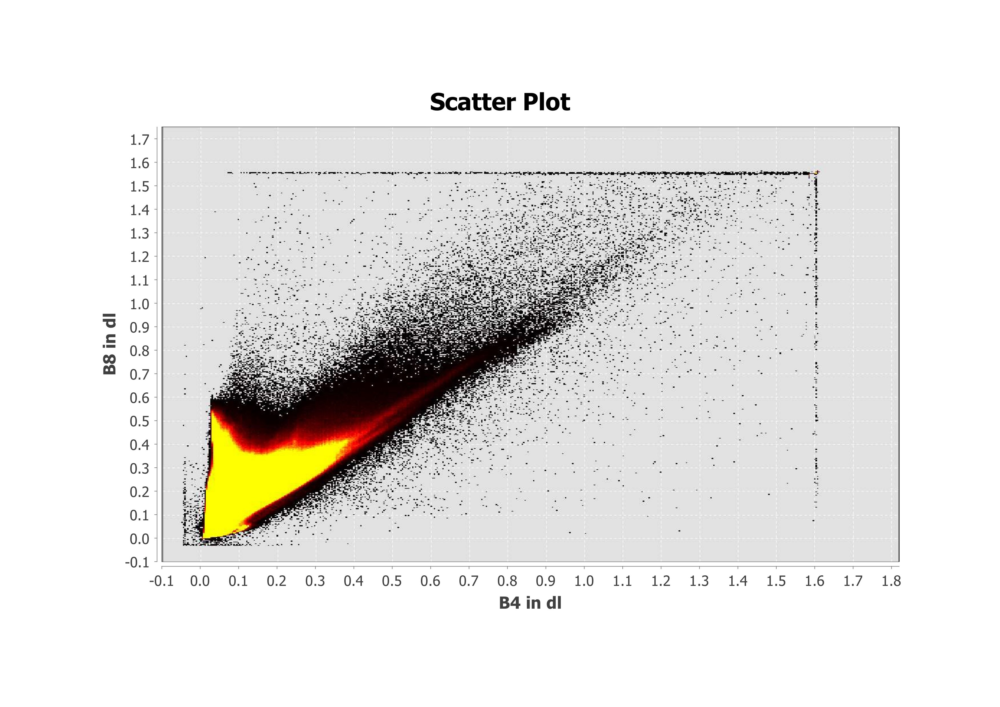
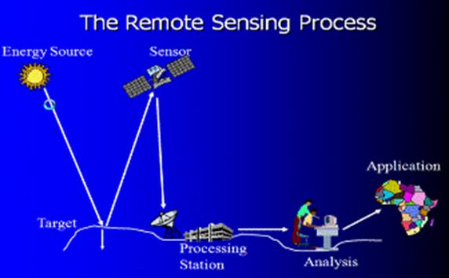
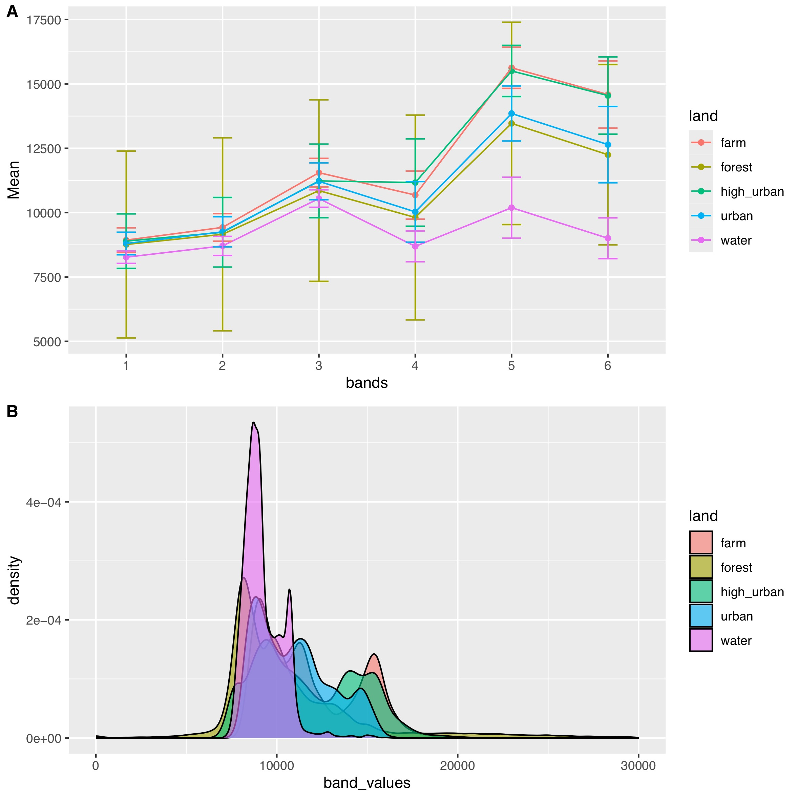
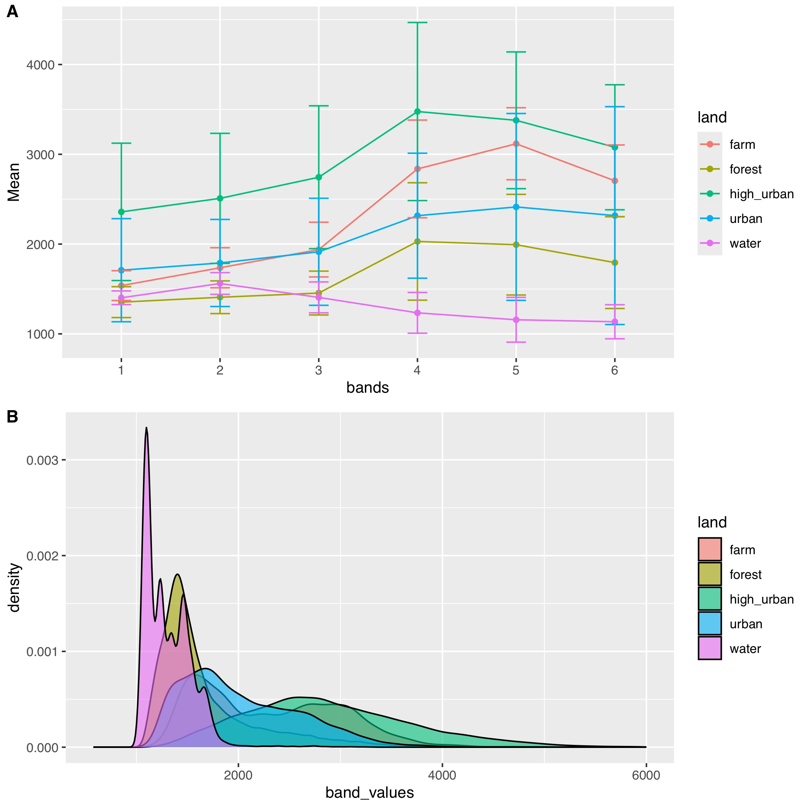
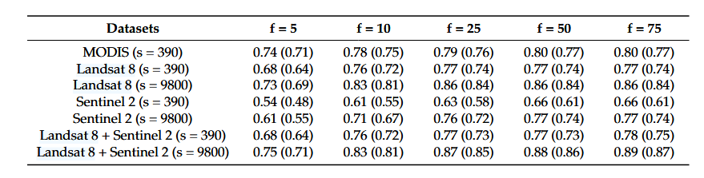

1 Introduction to remote sensing
1.1 Summary
This week’s learning content can be divided into two parts: The first part is the concept of remote sensing and the process of gaining the data. Especially, discussing how the interaction between Electromagnetic radiation and Earth’s surface (reflecting, absorbing and scattering) influences the data quality. There are different impacts on electromagnetic radiation with different wavelengths, so it’s important to choose suitable bands to analyse. Moreover, the weather especially the clouds will influence on capturing data. SAR can go through the clouds to reduce the impacts.

The second parts introduce the type of remote data, and how to simply deal with data by plotting spectral signatures. In this practical we use snap and r to deal with Landsat and Sentinel data. The main difference between remote data is from four resolutions: spatial, spectral, temporal and radiometric.
The steps are:
- Downloading data with less cloud cover, choosing different band combinations for different visuals
- Masking the study area and resampling the data in one spatial resolution using the nearest neighbour. Choosing down-scaling to avoid errors when calculating. The nearest neighbour is more effective and faster than bilinear or cubic convolution. But there will be abrupt changes at the boundary leading to large errors. When deciding to resample the resolution should not change too much which will influence the accuracy of the result.
- Select POIs, and create vector data containers for different land cover.
- Draw vector, export the Geo-tiff and shapefile load the file in R studio, and extract the value of tiff by vector.
- Plotting the Spectral signatures and comparing the difference of two sensors with the same band and same land use by t-test. The value of Landsat is much greater than that of Sentinel.


1.2 Applications
I’m interested in remote sensing in vegetation monitoring. The main difference between the two sensors Landsat and Sentinel is in the various resolutions on spatial, spectral and temporal. By comparing two articles about machine learning used in vegetation monitoring, I observed that two types of data perform differently in different tasks. Sentinel data performs more accurately in predicting by regression on a small scale, the Landsat data is more accurate in classifying vegetation types over large areas.
It may be due to the following reasons: Sentinel has a red edge band (B5, B6 and B7) that is more sensitive to monitoring vegetation. It also has a higher resolution of around 10M and 20M, so it has a more accurate prediction of vegetation characteristics such as trunk height for forest variables. (Astola et al. 2019) Sentinel has a 5-day return cycle, so, it captures short-term changes in vegetation well, but it will be complicated to handle large ranges of data. As a new sensor from 2015, it may be a lack of data build-up.

To my surprise, Landsat data are more accurate in studies related to the classification of vegetation types by setting a random forest model. (Sharma, Hara, and Tateishi 2017)Although Landsat has a 16-day return cycle, due to the length of time covered it has rich datasets and it has SWIR and thermal infrared bands, both of which can provide help for the study of large-scale classification. At the end of the article, the author got a more precise classification by combination of the two types of data.
How can these methods be applied to real life? Scientists found that near-infrared radiation can observe the health of vegetation. It is based on the principle that the health status of plants will influence the plant’s spectrum of both absorption and reflection. The U.S. Department of Agriculture uses Landsat and the U.S. Geological Survey to forecast agricultural productivity in each growing season. (Blickensdörfer et al. 2022)According to the comparison above, I think the result will be better to use Landsat data for large-scale farmland species identification, and then use Sentinel data to monitor small-scale changes in the growing season of a single crop.
| Comparison Factors | Sentinel-2 | Landsat 8 |
|---|---|---|
| Temporal Coverage | ~73 times/year (high frequency) | ~23 times/year (low frequency) |
| Spatial Resolution | 10 m (selected bands), 20 m (red edge) | 30 m (except 15 m panchromatic) |
| Band Configuration | Visible, NIR, SWIR, red edge (no thermal infrared) | Visible, NIR, SWIR, thermal infrared |
| Classification Performance | Multi-temporal features enhance vegetation health classification | Long-term data improves stability, versatile band coverage |
| Advantages | Superior for small-scale, short-term changes (e.g., vegetation health) | Superior for large-scale, long-term changes (e.g., vegetation types) |
| Applications | Better for specific feature prediction | Better for large-scale classification |
1.3 Reflection
Through this week I have learnt about the principles of remote sensing and a deep understanding of the advantages and application of Sentinel-2 and Landsat 8 data. Considering that radiation is an important element in remote sensing, I am wondering how climate change affects remote sensing vegetation monitoring. With global warming and the greenhouse effect, will the increased thermal radiation in the atmosphere have impacts on remote sensing results? Will the increased plant transpiration due to warming affect the absorption of red light and the reflection of near-infrared light? Can remote sensing capture the slight changes? Does the use of thermal infrared bands in vegetation health monitoring need to be adapted due to global warming? These issues need to be addressed step by step in the future.
Although there are massive studies about using and comparing Landsat and Sentinel-2 data on vegetation research, I am interested in how to innovate under the background of climate change. Could we build a model to predict the influence of climate on vegetation growth? Based on that we can predict how vegetation in a region or globally will be distributed over the next 50 years based on current climate change. It’s a big help to our food security and species conservation. Moreover, through this week’s studying, I also learned how to choose data with suitable resolution and choose a band which is more suitable for specific tasks. I think the ability to choose suitable data sets and methods is important in future study and learning.